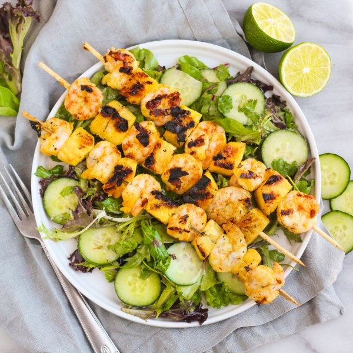

Grilled Shrimp & Pineapple Salad with Honey-Lime Dressing

Total Time
35 min
Nutrition (Per Serving)
542.1 kcalCalories
26.2 gProtein
42.7 gCarbs
31.8 gFat
Full nutrition table
| Calories | 542.1 kcal |
| Total fat | 31.8 g |
| Saturated fat | 10.1 g |
| Trans fat | 0.2 g |
| Cholesterol | 232.6 mg |
| Sodium | 1051.2 mg |
| Carbohydrates | 42.7 g |
| Fiber | 4.3 g |
| Sugars | 31.7 g |
| Protein | 26.2 g |
| Potassium | 671.8 mg |
| Calcium | 163.6 mg |
| Iron | 2.5 mg |
| Vitamin A | 487.2 IU |
| Vitamin C | 69.4 mg |
| Vitamin D | 7.1 IU |
Cookware
Ingredients
- 1English cucumber
- 2 clovesgarlic
- 1lime
- 1 smallpineapple
- 1 ½ lbraw peeled shrimp, fresh or frozen
- 2 (5 oz) pkgsspring mix (mixed greens)
- black pepper
- cayenne pepper
- cumin, ground
- garlic powder
- honey
- mayonnaise
- salt
- turmeric, ground
- virgin coconut oil
Steps
- If using wooden skewers, place 12-16 skewers in a shallow dish of water to soak until you are ready to use them.
- Wash and dry the fresh produce. (Skip the mixed greens if they came pre-washed.)1 lime
1 small pineapple
1 English cucumber
2 (5 oz) pkgs spring mix (mixed greens) - Peel and mince garlic; transfer to a large bowl.2 cloves garlic
- Juice lime into the bowl with the garlic. Add mayo, honey, salt, and pepper; whisk to combine the dressing and set aside.½ cup mayonnaise
¼ cup honey
½ tsp salt
¼ tsp black pepper - If using frozen shrimp, place them in a colander and run under cold water to thaw slightly and remove any ice crystals. (If using fresh shrimp, skip this step.) Place shrimp on a clean towel or paper towels and pat dry.1 ½ lb raw peeled shrimp, fresh or frozen
- Place spices in another large bowl and stir to combine.1 tsp salt
1 tsp garlic powder
1 tsp cumin
¼ tsp turmeric
¼ tsp cayenne pepper - Cut skin off pineapple, core, and cut into bite-sized pieces; transfer to the bowl with the spice mix.
- Add shrimp to the bowl with the pineapple, toss to coat, then thread shrimp and pineapple onto the skewers. Alternatively, you can cook the shrimp and pineapple directly on the grill/skillet without using skewers.
- Preheat a large grill pan, outdoor grill, or regular skillet over medium-high heat.
- Once the grill pan is hot, coat with oil. Working in batches if necessary, add skewers to the grill and cook, turning occasionally, until charred and the shrimp are cooked through, about 6 minutes.2 tbsp virgin coconut oil
- Trim and slice the cucumber into thin rounds. Add to the bowl with the dressing along with mixed greens; toss to combine the salad.
- To serve, divide salad between plates and top with skewers. Enjoy!